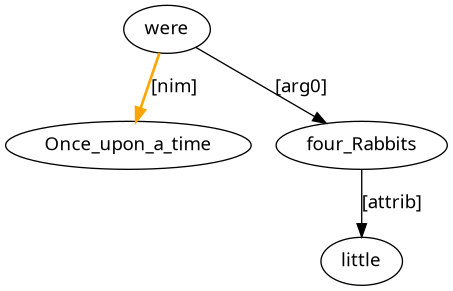
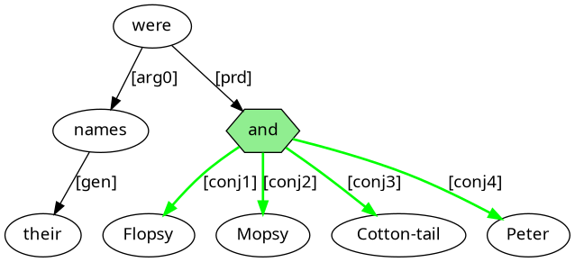
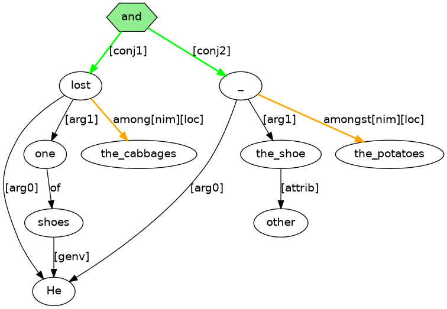
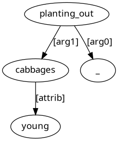
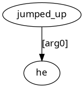
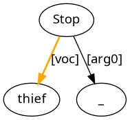
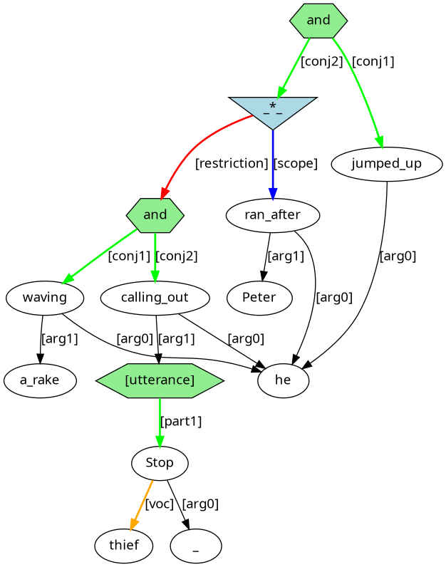
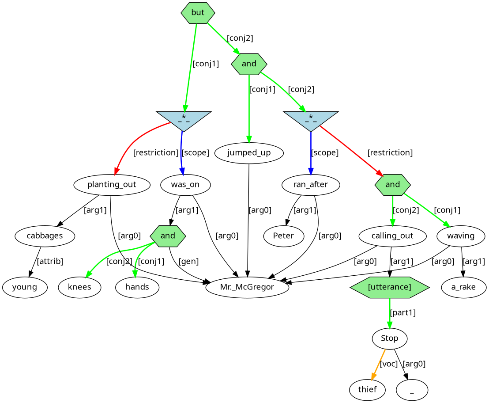

You can study English while having fun with English puzzle graphs. You will learn about word interactions while solving puzzles. The puzzles will help you understand how word connections can guide the building of sentences. Goals for working through the puzzles are:
Each puzzle takes the form of a graph of words with labelled arrows that connect the graph nodes. The labelled arrows are clues for building either a sentence fragment, a single sentence or multiple sentences of English. The puzzle task is to turn the graph of words with connecting clues into sentences, called ‘solution sentences’. You can check your success by seeing if your solution sentence(s) match the suggested answer solution sentence(s).
In a puzzle graph, word content for solution sentences is found outside of square brackets (‘[’, ‘]’). Square bracket content tells us about how words function, that is, what words do in their sentences. These are important clues that help to say where words should go to form solution sentences.
Words and square bracket function information can provide the content for a graph node. They can also provide the label for a directed arrow that connects graph nodes. An arrow connects content from one node (the governor node) to another node (the dependent node). It is typically square bracket function information that is used to label a directed arrow.
Square bracket content should not be included in your completed solution sentence(s). In contrast, all word content should be included in your completed solution sentence(s). You never have to modify the forms of words, so a word should be entered into its solution sentence as you find it in the graph.
Most of the words you need for the solution sentence(s) of a puzzle are found inside its graph, but sometimes you will need to add additional ‘invisible’ words. Some of the invisible words will turn out to be words that are involved with referencing what is talked about. These words can be:
Note that unbound pronouns do have graph presence.
Other invisible words are words that contribute no contentful information, but rather have a formal role of marking grammatical structure:
It is also possible for graph content to involve the ‘#’ symbol. This marks a word absence that has an abstract location in its solution sentence, as illustrated below in section 3.2.
This section offers tips for reaching solution sentences. This starts with a simple puzzle. Then we gradually pick up skills to tackle more complex puzzles.
To form a solution sentence, you can start by looking into a puzzle graph for an arrow that includes [arg0] in its label. The governor node for such an arrow will be the verb content for the clause, possibly with other supporting words, while the dependent node will be the head word corresponding to the subject, that is, the ‘do-er’ or ‘be-er’ or ‘have-er’ of the clause.
Consider figure 1. This gives the puzzle graph for a single clause. By finding the arrow labelled [arg0], we identify were as the main verb. We also identify Rabbits as the ‘be-er’ (subject).
Figure 1: Puzzle graph for a single clause
When the main verb of a clause is a form of the verb BE like were and there is no subject predicative connection ([prd2], as in Figure 2 below) or closely related ([clr]) connection, then the [arg0] dependent will typically need to occur after were. Moreover, were should occur after an existential there. With this knowledge, we can construct (1).
With (1), we already have a full sentence of English! However, (1) is not a complete solution sentence for figure 1, since there are words that have yet to be used. Two of these words come at the ends of arrows that have Rabbits as their governor node. These words act to modify Rabbits. Specifically, there is a numeral modifier to tell us about the number of rabbits (four), and there is an attributive modifier to tell us about the size of the rabbits (little). In English, a numeral modifier should occur before an attributive adjective modifier to give (2).
Figure 1 also contains content for a temporal modifier with an arrow labelled [modifier][tmp] that has the main verb as its governor node and that points to the adverb Once. This adverb has itself a modifier labelled with the preposition word upon and with time as the dependent word. After connecting these words, we get the solution sentence of (3).
Note that (3) includes a as the third word, and yet this word is not part of figure 1. This is an example of an ‘invisible’ word that, as already noted in section 2, we might sometimes need to add in addition to the words from the puzzle graph.
As another example, consider figure 2, which also has content for a single clause sentence.
Figure 2: Puzzle graph for another single clause
Searching for an [arg0] labelled arrow, we find that were is once again the main verb of the clause. The ‘be-er’ (subject) of the clause is names, which itself has an arrow labelled [genv] (genitive), which takes us to the genitive pronoun their. There is also an arrow labelled [prd2] (subject predicative), which provides content for ‘what their names were’ by taking us to and, which in turn takes us to four conjuncts. Each conjunct is linked with a [conjN] labelled arrow, where N is a conjunct's place in an ordering of all the conjuncts. Turning all of this into content for a sentence of English gets us to the solution sentence (4).
Now consider figure 3.
Figure 3: Puzzle graph combining figures 1 and 2

This third puzzle graph brings together content from the two previous puzzle graphs with connections of material at two different graph nodes. First, there is connection from the very top node of the graph with the word and. Nodes corresponding to the main verb nodes of the two earlier graphs form the dependent nodes of arrows labelled [conjN], much as we saw with the connections that led to Flopsy, Mopsy, Cotton-tail, and Peter. We can therefore expect to reach a solution sentence that is essentially the content of (3) connected by and to the content of (4).
But there is one further point of connection that we also need to make sense of: The arrow [genv] of figure 3 does not have a node with content their as its dependent like in figure 2, but rather takes as its dependent Rabbits, which corresponds to the Rabbits of figure 1. We can interpret this [genv] arrow connection as having an ‘invisible’ instance of their as the arrow's dependent. That is, the word their is absent from the puzzle graph because it's presence is captured as a direct arrow connection (referential link) to Rabbits, which occurs in the puzzle graph for independent reasons. We are therefore justified to take ‘(3) and (4)’ — namely (5) — to be the overall solution sentence for the puzzle graph of figure 3.
Figure 4 has a similar structure to figure 3, in the sense that there are two verbs connected by [conj1] and [conj2] arrows from and occurring topmost in the graph. However, while the verb of the first conjunct is overtly realised with lost, the content for the verb of the second conjunct is shown as #4_1009 to indicate the licensed absence of a verb (a lost lost!) from the solution sentence. The indexing with ‘#’ involves two numbers separated by an underscore character (_). The first number says which solution sentence the elision belongs to. The second number is unique for the elision instance.
Figure 4: Puzzle graph with ‘#’
Following all the links of figure 4, we can arrive at solution sentence (6).
This section demonstrates how to approach a complex puzzle. We will break this into stages, first building content for simpler graphs, which then combine to give larger graphs, and so ultimately lead to the final graph for reaching the overall solution sentence.
To start, consider figure 5.
Figure 5: Puzzle graph for a single clause

By finding [arg0], we can identify was as the main verb, and Mr._McGregor as the ‘be-er’ (subject). One other arrow extends from was. This is labelled with the preposition word on and the functional information [prd2] (subject predicative) and connects to and, which takes us to two conjuncts via the labelled connections [conj1] leading to hands and [conj2] leading to knees. One more connection, labelled [genv] (genitive/possessive), originates from and and leads to Mr._McGregor to capture the information that the hands and knees are those of Mr. McGregor. By following these connections and including his to capture the genitive/possessive connection, we can reach (7) as the solution sentence.
Now consider figure 6.
Figure 6: Puzzle content for a participle clause
An arrow labelled [arg1] (object) extends from planting_out to cabbages. In turn, cabbages leads via an [attrib] (attribute) labelled arrow to young. By following these connections of the graph, we reach the sentence fragment (8).
Now consider figure 7.
Figure 7: Puzzle graph combining figures 5 and 6

Figure 7 has connections to bring together node content from figures 5 and 6. There is a [cnt] node (continuative subordinate conjunction) to state that planting_out acts as a restiction on the content from was. There is also an [arg0] connection from planting_out to Mr._McGregor, the ‘be-er’ (subject) of the main clause. A solution sentence that meets these new criteria of Figure 7 is (9).
Now consider figure 8.
Figure 8: Puzzle graph for a single clause
Looking at jumped, this is linked to he with an [arg0] arrow, and to up with a [clr][dir] (closely related directional) arrow. Therefore, we can identify jumped as the main verb, he as the ‘do-er’ (subject), and up as an adverbial modifier, to derive the simple sentence of (10).
Now consider figure 9.
Figure 9: Puzzle graph for another single clause

Looking at ran, this is linked to he with an [arg0] arrow. Also, ran is linked to Peter with an arrow that contains the preposition word after and the function information [clr][dir] (closely related direction). With these words and connections, we can derive the solution sentence (11).
Now consider figure 10.
Figure 10: Puzzle graph combining figures 8 and 9

This combines figures 8 and 9, with and to connect jumped and ran. Note how the single he connects as the ‘do-er’ (subject) to both verbs. A solution sentence is (12).
Now consider figure 11.
Figure 11: Puzzle graph for a participle clause

We can see waving is connected to rake with an [arg1] ‘done to’ (object) arrow. A solution sentence fragment is (13).
Now consider figure 12.
Figure 12: Puzzle graph for an imperative clause
The [imperative] node that has an arrow labelled [scope] to Stop tells us that the clause is an imperative with Stop as the verb of the clause. Typically, an imperative is an order or instruction for an unmentioned ‘do-er’ to do something, but also the ‘do-er’ can be addressed with a [voc] (vocative) connection. A vocative — figure 12 has thief — can occur either at the front or end of an imperative, making (14) a possible solution sentence.
Now consider figure 13.
Figure 13: Puzzle graph for a clause with an embedding with the content of figure 12

This is the puzzle graph for a clause with an embedding with the content of figure 12. This embedding is connected by an [arg1] (object) arrow to the verb content calling (with [clr][dir] (closely related directional) modifier out). A solution sentence fragment is (15).
Now consider figure 14.
Figure 14: Puzzle graph combining figures 11 and 13

Figure 14 results from combining figure 11 and 13. Here, and has conjuncts waving and calling. A solution sentence fragment is (16).
Now consider figure 15.
Figure 15: Puzzle graph combining figures 10 and 14
Figure 15 has a [cnt] (continuative subordinate conjunction) node to combine figures 10 and 14, much like we saw happen with figure 7. Note how the verbs jumped, ran, waving, and calling all have [arg0] ‘do-er’ (subject) arrows that connect to the same he. A solution sentence is (17).
We are finally able to consider the overall puzzle graph of figure 16.
Figure 16: Puzzle graph combining figures 7 and 15
This has but to combine figures 7 and 15. Note how the verbs was, planting_out, jumped, ran, waving, and calling all have [arg0] ‘be-er/do-er’ (subject) arrows that connect to the same instance of Mr._McGregor. An overall solution sentence for figure 16 is (18).